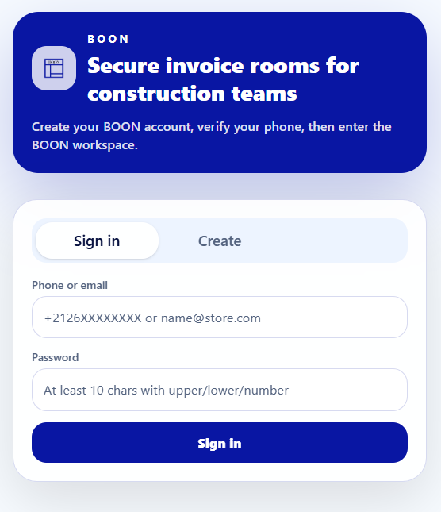
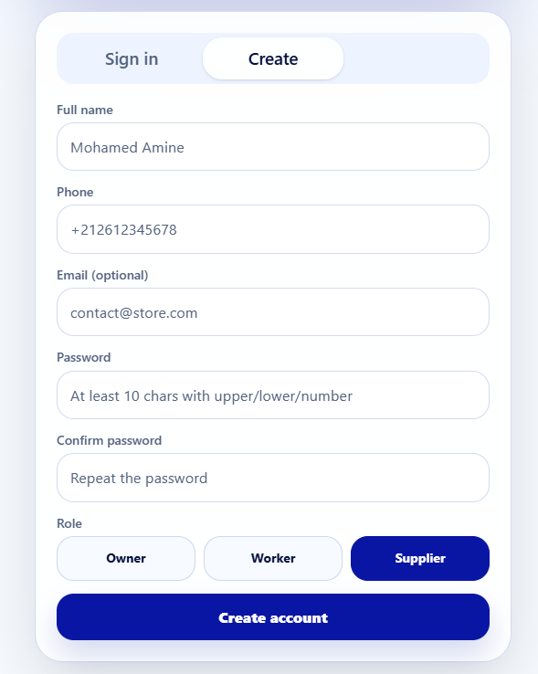
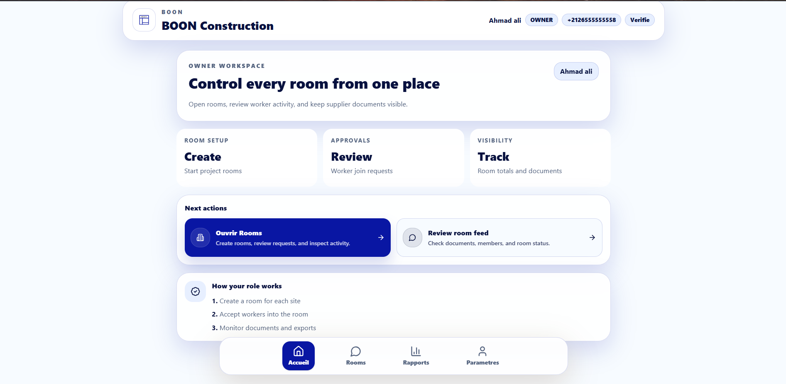
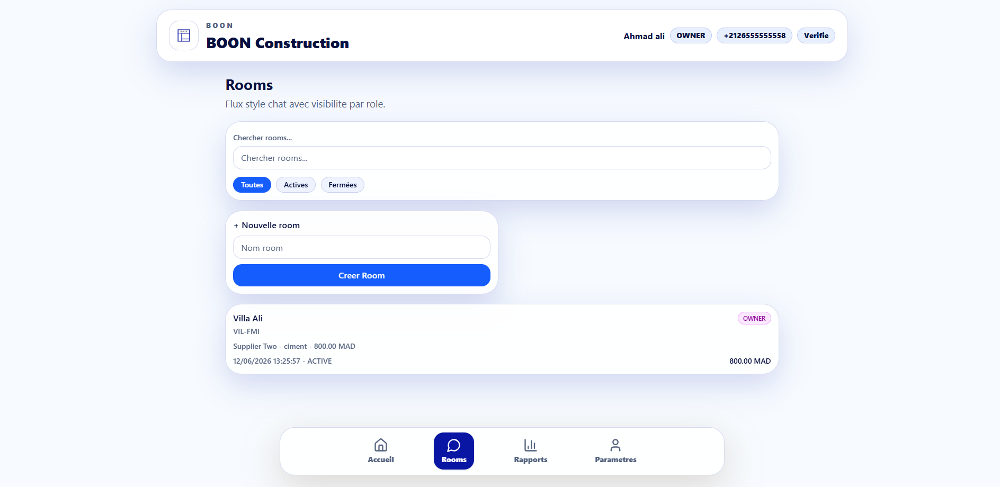
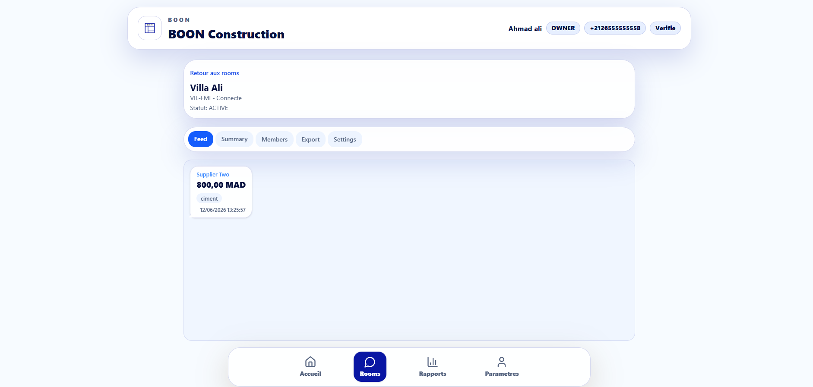
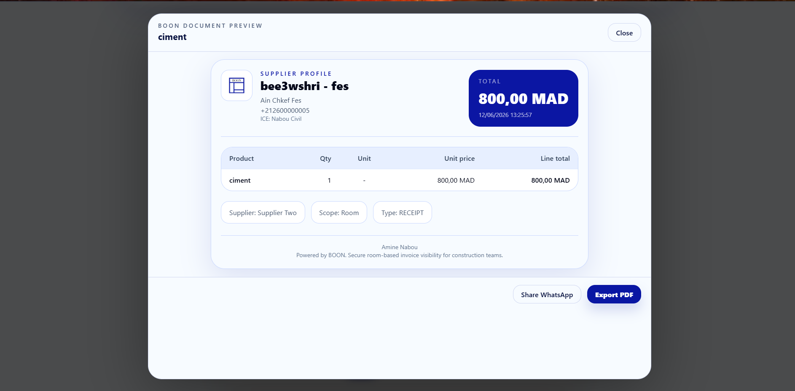
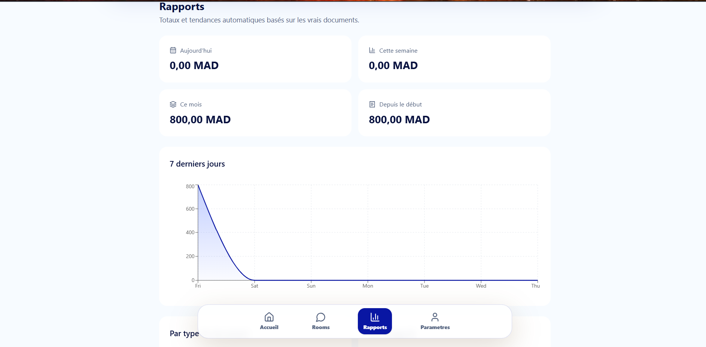
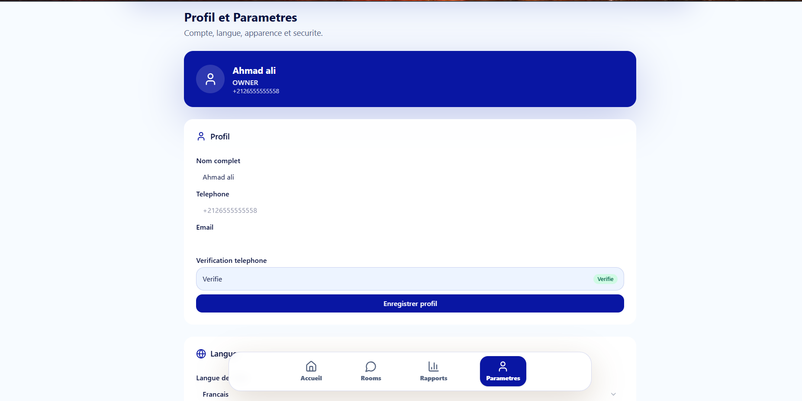

Rapport de Projet : BOON - Gestion des Documents de Construction
Table des Matières
- Introduction
- Contexte et Problématique
- Objectifs du Projet
- Fonctionnalités Principales
- Architecture Technique
- Conception et Modélisation
- Réalisation
- Démonstration et Captures d'Écran
- Difficultés Rencontrées et Solutions
- Résultats Obtenus
- Perspectives d'Amélioration
- Compétences Développées
- Conclusion
1. Introduction
BOON est une application web collaborative dédiée à la gestion des documents dans le secteur du BTP (Bâtiment et Travaux Publics). Elle permet aux propriétaires de chantiers, aux ouvriers et aux fournisseurs de centraliser, partager et gérer les documents clés (bons de commande, factures, devis) dans des espaces de travail virtuels appelés "rooms". L'application a été développée en utilisant une architecture moderne et sécurisée, combinant React en frontend et Laravel en backend pour offrir une expérience utilisateur optimale.
2. Contexte et Problématique
Dans le secteur du BTP, la gestion des documents est souvent effectuée manuellement ou via des outils peu adaptés, ce qui cause plusieurs problèmes majeurs :
- Perte de documents : Gestion papier risquée et sans sauvegarde digitale.
- Manque de traçabilité : Impossible de suivre l'historique des modifications et des partages.
- Communication compliquée : Coordination difficile entre les différents acteurs (propriétaires, ouvriers, fournisseurs).
- Erreurs humaines : Saisie incorrecte, duplications, et gestion inefficace des documents.
- Manque de centralisation : Documents éparpillés sur plusieurs supports et plateformes.
Problématique Centrale
Comment simplifier et centraliser la gestion des documents de construction pour améliorer la collaboration entre les acteurs d'un chantier ?
3. Objectifs du Projet
Les objectifs fixés pour ce projet sont :
- Centraliser les documents : Stocker tous les documents dans un seul endroit sécurisé et accessible.
- Améliorer la collaboration : Permettre aux acteurs de partager des documents rapidement et de manière sécurisée.
- Générer des PDFs automatiquement : Offrir des documents professionnels prêts à être partagés sans intervention manuelle.
- Gestion des rôles : Contrôler l'accès aux informations selon le rôle de l'utilisateur (propriétaire, ouvrier, fournisseur).
- Suivi analytique : Donner un aperçu des dépenses et des documents pour faciliter la prise de décision.
4. Fonctionnalités Principales
BOON propose un ensemble riche de fonctionnalités conçues pour répondre aux besoins des acteurs du BTP :
4.1 Gestion des Utilisateurs et Authentification
- Inscription avec numéro de téléphone et vérification par code SMS/OTP.
- Connexion sécurisée via identifiants (téléphone/mot de passe).
- Gestion des tokens d'accès (15 min) et de rafraîchissement (30 jours).
- Support pour trois rôles différents : OWNER, WORKER, SUPPLIER.
4.2 Gestion des Rooms (Salles de Chantier)
- Création de rooms par le propriétaire du chantier.
- Code de room unique et facile à partager pour inviter d'autres utilisateurs.
- Système de demandes d'adhésion pour les ouvriers avec approbation du propriétaire.
- Approbation/rejet des demandes d'adhésion par le propriétaire.
- Gestion du statut de la room (active/fermée).
- Suivi de la dernière activité dans chaque room.
4.3 Gestion des Documents
- Création de trois types de documents : bon de commande, facture, devis.
-
Deux types de visibilité :
- Personnels : Visibles seulement par le fournisseur créateur.
- Partagés : Visibles dans une room par les acteurs concernés.
- Ajout flexible d'articles avec nom, quantité et prix unitaire.
- Support du montant rapide si pas d'articles détaillés.
- Attachement de pièces jointes (photos, fichiers PDF, etc.).
- Génération automatique de PDF professionnel avec données du fournisseur.
4.4 Lien Ouvrier - Fournisseur
- Les ouvriers peuvent lier des fournisseurs à une room.
- Visibilité contrôlée : les ouvriers voient seulement les documents des fournisseurs qu'ils ont liés.
- Gestion flexible des liens (activation/désactivation).
4.5 Profil Fournisseur
- Gestion complète du profil professionnel (nom du magasin, téléphone, adresse, ICE, RC).
- Personnalisation du logo et note de pied de page pour les PDFs.
- Historique des activités et des documents créés.
4.6 Tableau de Bord et Analytics
- Vue d'ensemble des montants totaux dépensés.
- Détails par type de document (bon de commande, facture, devis).
- Détails par catégorie de dépenses.
- Top des fournisseurs par montant.
- Historique des 7 derniers jours pour suivi des tendances.
4.7 Partage des Documents
- Génération de liens temporaires signés valides 7 jours.
- Partage direct via WhatsApp avec prévisualisation du document.
- Sécurité garantie avec expiration des liens.
5. Architecture Technique
5.1 Stack Technique
BOON utilise une architecture 3 tiers (frontend, backend, base de données) avec les technologies suivantes :
| Couche | Technologies |
|---|---|
| Frontend | React 19, JavaScript ES6+, Tailwind CSS, Vite |
| Backend | Laravel 12, PHP 8.x, REST API |
| Base de données | MySQL 8.0+ |
| Outils supplémentaires | barryvdh/laravel-dompdf (génération PDF), Git (gestion de versions), Tailwind CSS |
5.2 Diagramme d'Architecture
┌─────────────────┐ HTTP/REST ┌──────────────────┐
│ React Frontend │ ──────────────────────► │ Laravel Backend │
│ (src/) │ ◄────────────────────── │ (backend/) │
│ │ JSON Response │ │
└─────────────────┘ └────────┬─────────┘
│ │
│ Tailwind CSS │ Laravel ORM
│ Vite Build │ Query Builder
│ │
└─────────────────────────────────────────────┼──────────┐
│ │
┌────────▼─────┐ │
│ MySQL │ │
│ Database │ │
└───────────────┘ │
│
DOMPDF Generator ──┘
(PDF Generation)6. Conception et Modélisation
6.1 Diagramme de Cas d'Utilisation
Les principaux cas d'utilisation sont :
Acteur : Propriétaire
- Créer une room pour un chantier
- Voir les demandes d'adhésion des ouvriers
- Approuver ou rejeter les demandes
- Gérer les membres de la room
- Voir tous les documents de la room
- Consulter les analytics et les dépenses
Acteur : Ouvrier
- S'inscrire et se connecter
- Rejoindre une room via le code
- Lier un fournisseur à une room
- Voir les documents des fournisseurs liés
- Gérer son profil utilisateur
Acteur : Fournisseur
- S'inscrire et se connecter
- Créer/Modifier son profil professionnel
- Créer des documents personnels
- Créer des documents dans une room
- Télécharger le PDF d'un document
- Partager un document via WhatsApp ou lien temporaire
6.2 Modèle de Données Principal
Le modèle de données comprend les tables suivantes :
Table : users
| Colonne | Type | Description |
|---|---|---|
id |
UUID | Identifiant unique |
phone |
VARCHAR (Unique) | Numéro de téléphone |
email |
VARCHAR (Nullable) | Adresse e-mail |
password_hash |
VARCHAR | Mot de passe haché |
full_name |
VARCHAR | Nom complet |
default_role |
ENUM | Rôle : OWNER, WORKER, SUPPLIER |
status |
ENUM | Statut : ACTIVE, DISABLED |
Table : rooms
| Colonne | Type | Description |
|---|---|---|
id |
UUID | Identifiant unique |
name |
VARCHAR | Nom de la room |
room_code |
VARCHAR (Unique) | Code unique pour rejoindre la room |
status |
ENUM | Statut : ACTIVE, CLOSED |
owner_id |
UUID (FK) | Propriétaire de la room |
last_activity_at |
TIMESTAMP | Date de la dernière activité |
Table : documents
| Colonne | Type | Description |
|---|---|---|
id |
UUID | Identifiant unique |
type |
ENUM | Type : RECEIPT, INVOICE, QUOTE |
room_id |
UUID (FK, Nullable) | Room associée au document |
supplier_id |
UUID (FK) | Fournisseur créateur |
grand_total |
DECIMAL | Montant total du document |
currency |
VARCHAR | Devise (défaut: MAD) |
is_personal |
BOOLEAN | Visibilité personnelle ou partagée |
6.3 Autres Tables Clés
-
api_tokens: Gestion des tokens d'accès et de rafraîchissement -
room_members: Lien entre users et rooms avec rôle -
room_join_requests: Demandes d'adhésion aux rooms -
worker_supplier_links: Lien entre ouvriers et fournisseurs dans une room -
supplier_store_profiles: Profils professionnels des fournisseurs document_items: Articles/lignes des documentsattachments: Pièces jointes des documents-
phone_verification_codes: Codes de vérification du téléphone
6.4 Diagrammes UML Visuels
Les diagrammes UML suivants modélisent l'architecture et les processus de BOON :
Diagramme de Cas d'Utilisation

Figure 6.4.1 : Diagramme de Cas d'Utilisation montrant tous les acteurs (Visiteur, Propriétaire, Ouvrier, Fournisseur) et leurs interactions avec les fonctionnalités principales du système.
Diagramme de Classes

Figure 6.4.2 : Diagramme de Classes représentant les entités principales (User, Room, Document) et leurs relations dans le modèle objet de BOON.
Diagrammes de Séquence
Les diagrammes de séquence suivants décrivent les flux d'interaction critiques du système :
1. Flux d'Authentification

Figure 6.4.3 : Séquence d'authentification montrant l'échange entre l'utilisateur, l'application frontend et le serveur backend pour la connexion sécurisée.
2. Flux de Gestion de Room pour Ouvrier

Figure 6.4.4 : Séquence de gestion de room pour un ouvrier, incluant la recherche et l'adhésion à une room via un code.
3. Flux de Liaison Fournisseur

Figure 6.4.5 : Séquence de liaison d'un fournisseur à une room, permettant à un ouvrier d'ajouter et gérer les fournisseurs.
4. Flux de Génération et Partage de Document PDF

Figure 6.4.6 : Séquence de création et génération de document PDF, incluant la conversion et le partage via différents canaux.
7. Réalisation
7.1 Backend (Laravel)
Le backend est structuré de manière modulaire et scalable :
-
Controllers : Traitement des requêtes API
-
BoonAuthController: Authentification, inscription, vérification, tokens -
BoonRoomController: Gestion des rooms et des membres -
BoonDocumentController: Gestion des documents et génération PDF -
BoonSupplierController: Gestion des fournisseurs et liens -
BoonAnalyticsController: Statistiques et analyses
-
- Models : Eloquent ORM pour User, DB Query Builder pour le reste
-
Middleware :
-
BoonAuthenticate: Vérification du token d'accès BoonRequireRole: Vérification des rôles
-
-
Support :
BoonApiSupporttrait avec toute la logique métier - Views : Template Blade pour la génération de PDF
7.2 Frontend (React)
Le frontend est organisé en composants réutilisables :
-
Components Principaux:
-
AuthGate: Gestion de l'authentification et vérification du rôle Dashboard: Page d'accueil avec statistiques-
RoomLive: Vue détaillée d'une room et de ses documents -
BoonCenter: Espace personnel des documents du fournisseur -
Profile: Gestion du profil utilisateur et fournisseur -
Reports: Analytics et visualisation des données BottomNav: Navigation mobile-friendly
-
-
API Management:
api.js: Couche d'abstraction APIapi-rest.js: Requêtes HTTP brutes
-
Styles : Tailwind CSS avec support:
- Thème clair/sombre
- Responsive design
- Support RTL pour Arabic
8. Démonstration et Captures d'Écran
8.1 Scénario Typique d'Utilisation
Scénario : Gestion d'un chantier appelé "Villa Agadir"
-
Inscription et Vérification
- Amine (propriétaire) s'inscrit avec son numéro de téléphone.
- Il reçoit un code de vérification et valide son compte.
-
Création d'une Room
- Amine crée une room appelée "Chantier Villa Agadir".
- Il obtient un code unique : "VIL-ABC123".
-
Adhésion de l'Ouvrier
- Youssef (ouvrier) s'inscrit et se connecte.
- Il rejoint la room en utilisant le code "VIL-ABC123".
- Amine approuve la demande d'adhésion de Youssef.
-
Liaison du Fournisseur
- Youssef recherche et lie le fournisseur "Matériaux Souss".
- "Matériaux Souss" est automatiquement ajouté à la room.
-
Création d'un Devis
- "Matériaux Souss" crée un devis pour des ciments et briques.
- Il ajoute les articles : 50 sacs de ciment (250 MAD chaque), 1000 briques (1 MAD chaque).
- Total : 13500 MAD.
-
Téléchargement et Partage
- Le devis est visible pour Amine, Youssef et "Matériaux Souss".
- "Matériaux Souss" télécharge le PDF avec son logo et ses informations.
- Il partage le lien via WhatsApp avec Amine et Youssef.
8.2 Captures d'Écran de l'Application
Les captures suivantes illustrent les principaux écrans et fonctionnalités de BOON :
Authentification

Page de Connexion : Interface de connexion sécurisée pour les utilisateurs existants. Les utilisateurs peuvent se connecter avec leur numéro de téléphone et leur mot de passe. La page offre une interface clean et intuitive avec support RTL.

Page d'Inscription : Formulaire d'inscription permettant aux nouveaux utilisateurs de créer un compte avec vérification du numéro de téléphone par code OTP. Le processus est sécurisé et simple.
Tableau de Bord et Gestion

Tableau de Bord : Vue d'ensemble du système avec les statistiques principales. Affiche les montants totaux, les documents récents, et permet une navigation rapide vers les différentes sections (rooms, documents, analytics). Interface responsive et mobile-friendly.

Gestion des Rooms : Liste des rooms avec code d'accès, statut et dernière activité. Les propriétaires peuvent créer de nouvelles rooms, voir les demandes d'adhésion et gérer les membres. Interface intuitive pour faciliter la gestion des chantiers.

Fil d'Activité de la Room : Vue détaillée d'une room avec tous les documents partagés, les membres connectés et l'historique d'activité. Les utilisateurs peuvent voir qui a créé quel document et quand. Système de notification pour rester informé.
Documents et Partage

Visualisation d'un Document : Affichage détaillé d'un document avec tous les articles, le montant total, les pièces jointes et les options de partage. Les utilisateurs peuvent télécharger le PDF, partager via WhatsApp ou générer un lien temporaire signé.
Analytics et Rapports

Analytics et Rapports : Tableau de bord analytique complet avec graphiques, statistiques par type de document, par catégorie, et top des fournisseurs. Historique des 7 derniers jours pour suivre les tendances de dépenses. Aide à la prise de décision.
Profil et Paramètres

Paramètres et Profil : Gestion du profil utilisateur et des paramètres de compte. Les fournisseurs peuvent gérer leur profil professionnel (logo, nom du magasin, ICE, RC, adresse). Les utilisateurs peuvent modifier leurs informations et gérer leurs préférences.
9. Difficultés Rencontrées et Solutions
9.1 Authentification Sécurisée
- Problème : Gérer des sessions sécurisées sans utiliser Laravel Sanctum ou Passport.
-
Solution : Mise en place d'un système personnalisé
avec :
- Tokens d'accès (15 min) pour les requêtes courantes
- Tokens de rafraîchissement (30 jours) pour renouveler l'accès
- Stockage sécurisé dans la table
api_tokens - Hachage des mots de passe avec Laravel Hash facade
9.2 Génération PDF Responsive
- Problème : Générer des PDFs professionnels avec les données du fournisseur et les articles sans outils externes coûteux.
-
Solution :
-
Utilisation de la bibliothèque
barryvdh/laravel-dompdf -
Template Blade personnalisé
(
resources/views/pdf/document.blade.php) - CSS spécifique pour l'impression et le PDF
- Intégration du logo et des informations du fournisseur
-
Utilisation de la bibliothèque
9.3 Gestion des Droits d'Accès par Rôle
- Problème : Contrôler qui peut voir/faire quoi dans l'application selon le rôle.
-
Solution :
-
Middleware
BoonRequireRolevérifiant le rôle avant chaque requête protégée -
Logique métier dans
BoonApiSupportpour filtrer les documents visibles - Vérification à multiple niveaux (middleware + métier)
- Trois rôles clairs : OWNER (propriétaire), WORKER (ouvrier), SUPPLIER (fournisseur)
-
Middleware
9.4 Traçabilité des Activités
- Problème : Savoir qui a fait quoi et quand dans une room.
-
Solution :
-
Mise à jour automatique du champ
last_activity_atde la room -
Enregistrement de
last_activity_previewavec description lisible - Timestamps automatiques pour chaque document créé/modifié
- Historique visible dans le fil d'activité de la room
-
Mise à jour automatique du champ
9.5 Support Multi-Langue et RTL
- Problème : Supporter l'arabe avec layout RTL et traductions.
-
Solution :
- Tailwind CSS avec classe
dir="rtl" - Flexbox et Grid responsive
- Logique côté frontend pour basculer entre LTR et RTL
- Interface intuitive dans les deux langues
- Tailwind CSS avec classe
10. Résultats Obtenus
À l'issue du développement, les résultats suivants ont été atteints :
- MVP Fonctionnel et Complet : Toutes les fonctionnalités principales sont implémentées et directement utilisables en production.
- Code Bien Organisé : Architecture claire et modulaire avec séparation nette entre frontend/backend, facilitant la maintenance et l'évolution.
-
Sécurité Robuste :
- Authentification sécurisée avec tokens
- Hachage des mots de passe
- Vérification des droits d'accès par rôle
- Validation des entrées
-
Expérience Utilisateur Optimale :
- Interface intuitive et clean
- Responsive design pour tous les écrans
- Support RTL pour Arabic
- Navigation mobile-friendly
- Tests Réalisés et Validés : Testé avec succès pour les trois rôles (propriétaire, ouvrier, fournisseur) avec des scénarios réels.
11. Perspectives d'Amélioration
Pour continuer à améliorer BOON et augmenter sa valeur, plusieurs pistes sont envisageables :
- Déploiement Cloud : Héberger l'application sur un service cloud (Render, AWS, DigitalOcean, etc.) pour qu'elle soit accessible en ligne 24/7.
- Notifications Push : Avertir les utilisateurs en temps réel des nouveaux documents, demandes d'adhésion ou changements importants.
- Mode Hors Ligne : Permettre de créer des documents sans connexion internet, avec synchronisation automatique à la reconnexion.
- Historique Complet des Modifications : Garder une trace détaillée de chaque modification de document avec qui a modifié et quand.
- Application Mobile Native : Créer une application mobile iOS/Android pour une meilleure accessibilité sur les chantiers (utiliser React Native ou Flutter).
- Support Multi-Devise : Permettre de gérer plusieurs devises (EUR, USD, GBP, etc.) avec conversion automatique.
- Intégrations Externes : Intégrer avec d'autres outils comptables populaires (QuickBooks, Sage, Wave, etc.) pour synchroniser les données.
- Gestion des Équipes : Permettre aux propriétaires de créer des équipes et déléguer des responsabilités.
- Signature Électronique : Ajouter la possibilité de signer électroniquement les documents.
- Appels Vidéo Intégrés : Communication directe entre les acteurs sans quitter la plateforme.
12. Compétences Développées
Ce projet a permis de développer et d'approfondir les compétences professionnelles suivantes :
- Développement Full Stack : Maîtrise complète de React + Laravel pour créer une application web complète.
- Conception UML : Création de diagrammes professionnels (classes, cas d'utilisation, séquence).
- Gestion de Base de Données : Modélisation relationnelle, migrations, requêtes SQL optimisées.
- Sécurité Informatique : Authentification robuste, gestion des droits, hachage de mots de passe.
- Gestion de Versions : Maîtrise complète de Git et des workflows collaboratifs.
- UX/UI Design : Design d'interfaces responsives et intuitive avec Tailwind CSS.
- Résolution de Problèmes : Analyse approfondie des défis techniques et trouvaille de solutions appropriées.
- Architecture Logicielle : Conception d'architectures modulaires, scalables et maintenables.
- Génération PDF : Maîtrise des outils de génération PDF dynamiques.
- Support Multi-Langue : Implémentation du support RTL et de l'internationalisation.
13. Conclusion
BOON est une réponse concrète et innovante aux problèmes de gestion de documents dans le secteur du BTP. Grâce à son architecture moderne, ses fonctionnalités collaboratives complètes et son interface intuitive, BOON permet aux acteurs d'un chantier (propriétaires, ouvriers, fournisseurs) de travailler plus efficacement et avec une meilleure traçabilité.
Le MVP est complet et fonctionnel, offrant toutes les capacités essentielles pour gérer les documents de construction de manière centralisée. L'application a été testée avec succès dans les trois rôles principaux et démontre une expérience utilisateur fluide et professionnelle.
De nombreuses améliorations et extensions sont possibles pour augmenter la valeur du produit et améliorer continuellement l'expérience utilisateur. Cette base solide permet d'envisager une évolutivité à long terme et une adoption croissante dans le secteur du BTP.
Avec BOON, la gestion des documents de construction entre dans l'ère numérique.
Auteur : Amine Nabou
Promotion : DevOWFS 204
Établissement : OFPPT (Office de la Formation Professionnelle et de la Promotion du Travail)
Date : 2026